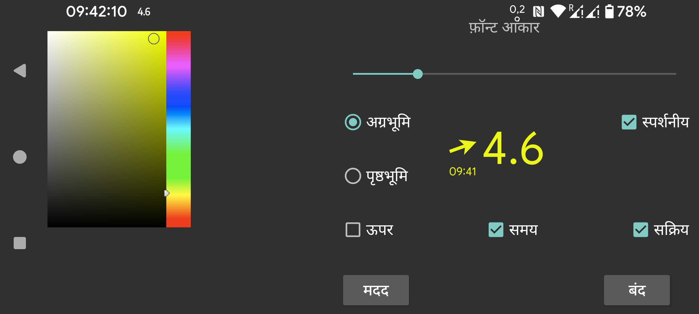

ar be de es fr hi it ja nl pl ru tr uk uz zh en
यहाँ आप फ्लोटिंग ग्लूकोज का फ़ॉन्ट आकार और अग्रभूमि तथा पृष्ठभूमि रंग सेट कर सकते हैं।
स्पर्शनीय: सेट होने पर आप फ्लोटिंग ग्लूकोज को अपनी उंगली से हिला सकते हैं और इसे लंबा दबाकर (बिना हिलाए) छोटा कर सकते हैं। जब स्पर्शनीय अनसेट होता है, तो टच इनपुट फ्लोटिंग ग्लूकोज के नीचे की विंडो पर जाता है, इसलिए आप फ्लोटिंग ग्लूकोज के नीचे के ऐप का उपयोग कर सकते हैं। आप फ्लोटिंग ग्लूकोज को डबल टैप करके भी अस्पर्शनीय बना सकते हैं।
पारदर्शी: पृष्ठभूमि अदृश्य।
ऊपर: फ्लोटिंग ग्लूकोज Juggluco के ऊपर भी मौजूद।
समय: ग्लूकोज मान का टाइमस्टैम्प।
सक्रिय: इसे चालू करें।
आप फ्लोटिंग ग्लूकोज को बायां मध्य मेन्यू->फ्लोट से चालू और बंद कर सकते हैं।
आप फ्लोटिंग ग्लूकोज के तीर की ओर टैप करके Juggluco पर स्विच कर सकते हैं। ग्लूकोज मान की ओर डबल टैप करने से फ्लोटिंग ग्लूकोज अस्पर्शनीय हो जाता है। ग्लूकोज मान को लंबा दबाने से केवल एक छोटा ग्लूकोज मान प्रदर्शित होता है ताकि आप नीचे जो है उसके साथ बातचीत कर सकें, छोटे डिस्प्ले को टैप करना इसे फिर से बड़ा करता है। ग्लूकोज मान की ओर छूते हुए हिलाना फ्लोटिंग ग्लूकोज को हिलाता है।
अन्य ऐप्स के ऊपर प्रदर्शित होने के लिए Juggluco को एक विशेष अनुमति चाहिए। WearOS और Android Automotive पर भी आपको यह अनुमति देने के लिए adb का उपयोग करना होगा:
adb shell pm grant tk.glucodata android.permission.SYSTEM_ALERT_WINDOW
कुछ घड़ियों (उदाहरण के लिए TicWatch Pro) पर, आप इसे इससे भी अनुमति दे सकते हैं: Android/WearOS settings->Apps & notifications-> App info->Juggluco->Advanced->Display over other apps।